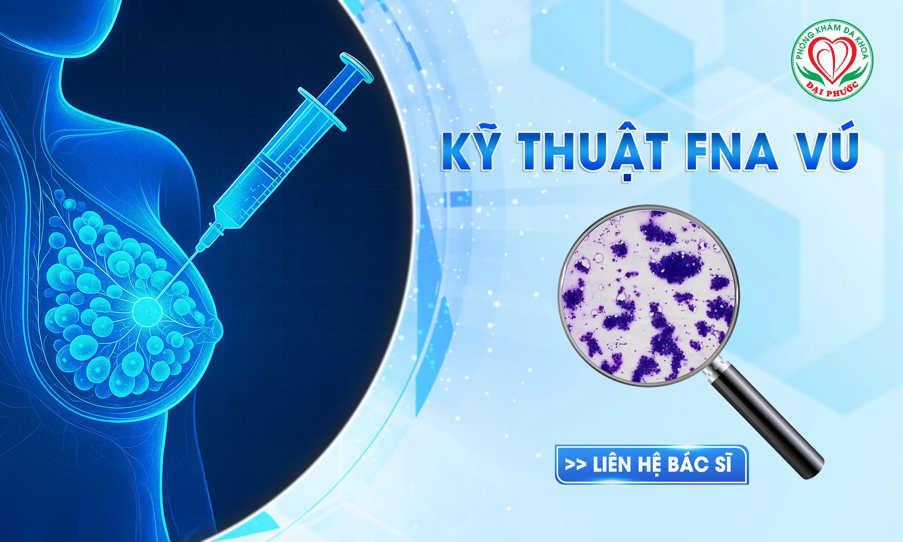

FNA Vú và CNB Vú Là Gì? Chọc Hút Tế Bào - Sinh Thiết Vú Bằng Kim

FNA Vú và CNB Vú Là Gì? Chọc Hút Tế Bào - Sinh Thiết Vú Bằng Kim
Tóm tắt nhanh (Quick Answer Box)
- FNA vú (Fine Needle Aspiration) là kỹ thuật chọc hút tế bào vú bằng kim nhỏ (23 gauge) không cần gây tê, thời gian nhanh, phù hợp tổn thương dạng nang hoặc khối u nghi ngờ.
- CNB vú (Core Needle Biopsy) là phương pháp sinh thiết vú bằng kim lớn hơn (14-16 gauge), có gây tê, lấy mẫu mô học chính xác cao hơn, được ưu tiên cho chẩn đoán ung thư vú hiện nay.
- Chỉ định chính: Khối u vú BIRADS 3-4-5, tổn thương nghi ngờ ung thư vú cần xác định bản chất.
Ung thư vú đang gia tăng đáng kể tại Việt Nam với hơn 15.000 ca mới mỗi năm theo Globocan 2020. Chẩn đoán sớm và chính xác là chìa khóa để điều trị thành công, trong đó FNA vú và CNB vú là hai kỹ thuật can thiệp bướu vú dưới hướng dẫn siêu âm được áp dụng rộng rãi trên toàn thế giới.
Phòng khám Đa khoa Đại Phước với đội ngũ bác sĩ chuyên khoa Chẩn đoán hình ảnh giàu kinh nghiệm sẽ giúp bạn hiểu rõ về hai kỹ thuật quan trọng này.
1. FNA Vú Là Gì? Định Nghĩa Và Nguyên Lý Kỹ Thuật
 Hình minh họa: Kỹ thuật FNA và CNB vú được thực hiện dưới hướng dẫn siêu âm, kim được đưa chính xác vào khối u để lấy mẫu tế bào/mô học
Hình minh họa: Kỹ thuật FNA và CNB vú được thực hiện dưới hướng dẫn siêu âm, kim được đưa chính xác vào khối u để lấy mẫu tế bào/mô học
1.1. Khái niệm FNA vú
FNA vú (Fine Needle Aspiration) hay chọc hút tế bào tuyến vú bằng kim nhỏ là thủ thuật can thiệp tối thiểu sử dụng kim mỏng (23 gauge - tương đương kim tiêm thông thường) để:
- Chọc vào khối u trong tuyến vú
- Hút lấy một lượng nhỏ tế bào
- Làm xét nghiệm tế bào học (cytology)
- Xác định tính chất lành tính hay ác tính của khối u
Đặc điểm nổi bật:
- Không cần gây mê hoặc gây tê
- Thời gian thực hiện: 10-15 phút
- Kim rất nhỏ, ít xâm lấn
- Không để lại sẹo
1.2. Cơ chế hoạt động của FNA vú
Bước 1: Định vị chính xác bằng siêu âm
- Sử dụng siêu âm để xác định vị trí, kích thước khối u
- Đánh dấu điểm chọc tối ưu
- Ước lượng khoảng cách, góc độ chọc an toàn
- Tránh các mạch máu lớn, thành ngực, túi ngực, màng phổi
Xem thêm: Tại sao cần kết hợp kết quả chụp nhũ ảnh và siêu âm vú trong chẩn đoán điều trị?
Bước 2: Thực hiện chọc hút
- Kim nhỏ được đưa vào trung tâm khối u dưới hướng dẫn siêu âm
- Tạo áp lực âm bằng ống tiêm để hút tế bào
- Thay đổi hướng kim nhiều lần để lấy mẫu từ nhiều vùng của khối u
- Đảm bảo lấy đủ tế bào để chẩn đoán
Bước 3: Xử lý mẫu bệnh phẩm
- Tế bào được phết mỏng lên lam kính
- Cố định mẫu bằng cồn
- Nhuộm màu theo phương pháp Papanicolaou
- Chuyên viên giải phẫu bệnh đọc kết quả dưới kính hiển vi
2. CNB (Core Needle Biopsy) Vú Là Gì? Kỹ Thuật Sinh Thiết Vú Bằng Kim Hiện Đại
2.1. Định nghĩa CNB vú
CNB vú (Core Needle Biopsy) hay sinh thiết lõi vú bằng kim rỗng là kỹ thuật can thiệp tiên tiến sử dụng kim lớn hơn FNA (14-16 gauge) để:
- Lấy mảnh mô vú ra khỏi vùng tổn thương
- Thực hiện dưới hướng dẫn siêu âm hoặc nhũ ảnh
- Lấy mẫu mô học (histology) thay vì chỉ tế bào
- Chẩn đoán chính xác bản chất khối u vú
Ưu điểm vượt trội:
- Là phương pháp can thiệp phổ biến nhất hiện nay cho bướu vú
- Không đau hoặc đau nhẹ nhờ hỗ trợ thuốc tê tại chỗ
- Nhanh chóng, không cần phẫu thuật
- Không để lại sẹo
- Độ chính xác cao về mô bệnh học
2.2. Tại sao CNB vú được ưu tiên hơn FNA?
⚠️ Lưu ý quan trọng:
Với những hạn chế của FNA, hiện nay trong y học tiên tiến đã hầu như sử dụng CNB cho tổn thương vú thay vì FNA.
Lý do: Ung thư vú phát hiện sớm có thể chữa khỏi hoàn toàn, do đó cần phương pháp chẩn đoán chính xác nhất.
Mô bệnh học từ CNB cung cấp thông tin quan trọng:
- Loại khối u cụ thể
- Mức độ ác tính (độ mô học)
- Tình trạng thụ thể hormone (ER, PR)
- Trạng thái HER2
- Giúp lập kế hoạch điều trị toàn diện
3. So Sánh FNA Và CNB Vú: Nên Chọn Phương Pháp Nào?
3.1. Bảng so sánh chi tiết
| Tiêu chí | FNA vú | CNB vú |
| Kim sử dụng | Kim nhỏ 23 gauge | Kim lớn hơn 14-16 gauge |
| Thời gian | Nhanh (5-10 phút) | Khá nhanh (15-20 phút) |
| Gây tê | Không cần | Tê tại chỗ |
| Mẫu lấy được | Tế bào học - kết quả hạn chế | Mô học - chính xác, tin cậy hơn |
| Độ chính xác | Thấp hơn | Cao hơn |
| Đau đớn | Rất ít | Ít (nhờ gây tê) |
| Ứng dụng chính | Tổn thương nang, ổ tụ dịch, hạch | Khối u vú BIRADS 4-5 |
3.2. Khi nào nên chọn FNA vú?
Chỉ định chính của FNA:
- Tổn thương dạng nang, ổ tụ dịch
- Áp xe vú cần dẫn lưu
- Hạch nghi ngờ di căn
- Tổn thương vú BIRADS 4-5 khi không có CNB
- BIRADS 3 trong các trường hợp đặc biệt:
- Bệnh nhân có yếu tố nguy cơ cao
- Theo dõi định kỳ khó thực hiện
- Bệnh nhân và bác sĩ điều trị yêu cầu
- Yếu tố tâm lý
- Cần chẩn đoán rõ ràng
3.3. Khi nào nên chọn CNB vú?
Chỉ định CNB (được ưu tiên):
- Tổn thương vú BIRADS 4-5
- BIRADS 3 trong các trường hợp:
- Bệnh nhân có yếu tố nguy cơ cao
- Theo dõi định kỳ khó thực hiện
- Bệnh nhân và bác sĩ điều trị yêu cầu
- Yếu tố tâm lý
- Cần chẩn đoán rõ ràng
Chống chỉ định CNB:
- Dị ứng với thuốc tê
- Rối loạn đông máu nặng
- Đang sử dụng thuốc chống đông máu (cần thảo luận với bác sĩ)
4. Khi Nào Cần Chọc Hút FNA/CNB Vú? Phân Loại BIRADS
 Đau vú, khó chịu vùng ngực là một trong những dấu hiệu cần đi khám để bác sĩ đánh giá và chỉ định siêu âm vú, FNA hoặc CNB nếu cần thiết
Đau vú, khó chịu vùng ngực là một trong những dấu hiệu cần đi khám để bác sĩ đánh giá và chỉ định siêu âm vú, FNA hoặc CNB nếu cần thiết
4.1. Hệ thống BIRADS là gì?
BIRADS (Breast Imaging Reporting and Data System) là hệ thống phân loại chuẩn quốc tế đánh giá mức độ nguy cơ ung thư vú qua siêu âm hoặc nhũ ảnh:
- BIRADS 1: Bình thường
- BIRADS 2: Lành tính chắc chắn
- BIRADS 3: Có thể lành tính (nguy cơ <2%)
- BIRADS 4: Nghi ngờ ác tính (nguy cơ 2-95%)
- BIRADS 5: Ác tính cao (nguy cơ >95%)
- BIRADS 6: Ác tính đã được chứng minh bằng sinh thiết
4.2. Dấu hiệu cần làm FNA/CNB vú
Triệu chúng lâm sàng:
- Sờ thấy khối u ở vú
- Núm vú tiết dịch bất thường (đặc biệt dịch máu)
- Thay đổi hình dạng, kích thước vú
- Da vú có thay đổi (sần sùi, đỏ, tróc vảy)
- Núm vú thụt vào hoặc lệch hướng
- Sưng hạch nách không rõ nguyên nhân
Kết quả siêu âm/nhũ ảnh:
- BIRADS 4-5: Bắt buộc phải làm CNB
- BIRADS 3 có yếu tố nguy cơ: Nên làm CNB
- Khối u tăng kích thước nhanh
- Vi vôi hóa dạng ác tính
Xem thêm: Tầm soát ung thư tuyến vú
5. Quy Trình Thực Hiện FNA Vú Chi Tiết Tại Phòng Khám Đa Khoa Đại Phước
5.1. Chuẩn bị trước thủ thuật
Chuẩn bị bệnh nhân:
- Bệnh nhân hầu như không cần chuẩn bị gì đặc biệt
- Ăn uống bình thường
- Không cần nhịn ăn
Chuẩn bị của bác sĩ:
- Siêu âm xác định lại vị trí khối u
- Giải thích thủ thuật cho bệnh nhân
- Chuẩn bị dụng cụ vô trùng
- Kiểm tra máy siêu âm, kim chọc
5.2. Các bước thực hiện
Bước 1: Vệ sinh và tư thế
- Bệnh nhân nằm ngửa, tay đặt sau đầu
- Vệ sinh da vùng vú bằng dung dịch sát khuẩn
Bước 2: Định vị bằng siêu âm
- Đặt đầu dò siêu âm xác định khối u
- Chọn đường đi kim ngắn nhất, an toàn nhất
- Tránh các mạch máu lớn, thành ngực, túi ngực, màng phổi
Bước 3: Thực hiện chọc
- Đưa kim qua da theo hướng dẫn siêu âm
- Kim đi vào trung tâm khối u
- Tạo áp lực âm
- Hút tế bào bằng ống tiêm
Bước 4: Lấy mẫu từ nhiều vùng
- Thay đổi hướng kim nhiều lần
- Đảm bảo lấy đủ tế bào để chẩn đoán
- Bỏ áp lực âm
- Rút kim và đè ép nơi chọc bằng bông gòn
Bước 5: Xử lý mẫu bệnh phẩm
- Phết tế bào lên lam kính
- Cố định mẫu bằng cồn
- Ghi nhãn và gửi phòng xét nghiệm
5.3. Chăm sóc sau thủ thuật
Tại phòng khám:
- Có thể ra về ngay sau thủ thuật
- Dán băng cá nhân nhỏ
- Quan sát bệnh nhân
- Hướng dẫn chăm sóc tại nhà
Lưu ý khi về nhà:
- Có thể có chút đau nhức nhẹ (bình thường)
- Giữ vùng vú sạch sẽ
- Liên hệ ngay nếu có sưng, đau nhiều, sốt
Xem thêm: Hướng dẫn sinh thiết FNA
6. Quy Trình Thực Hiện CNB Vú Chi Tiết
6.1. Chuẩn bị trước thủ thuật
Chuẩn bị bệnh nhân:
- Thông báo nếu dị ứng thuốc tê
- Thông báo nếu đang dùng thuốc chống đông máu hoặc aspirin (cần thảo luận với bác sĩ điều trị)
- Ăn uống bình thường
Chuẩn bị của bác sĩ:
- Siêu âm xác định lại vị trí khối u
- Giải thích thủ thuật cho bệnh nhân
- Chuẩn bị dụng cụ vô trùng
- Kiểm tra máy siêu âm, kim sinh thiết
6.2. Các bước thực hiện chi tiết
Bước 1: Vệ sinh và tư thế
- Bệnh nhân nằm ngửa, tay đặt sau đầu
- Vệ sinh da vùng vú bằng dung dịch sát khuẩn
Bước 2: Định vị bằng siêu âm
- Đặt đầu dò siêu âm xác định khối u
- Sử dụng kim 14-16 gauge
- Tránh các mạch máu lớn, túi ngực, thành ngực, màng phổi
Bước 3: Thực hiện sinh thiết
- Gây tê tại chỗ vùng sinh thiết
- Rạch 1 lỗ nhỏ trên da bằng dao mổ
- Đưa kim vào sinh thiết 3-5 mẫu
- Mẫu bỏ vào lọ có chứa formalin
- Lấy mẫu xong cần đè ép thời gian ngắn để tránh chảy máu
- Sau đó băng ép vô trùng
6.3. Chăm sóc sau thủ thuật
Tại phòng khám:
- Có thể ra về ngay sau thủ thuật
- Băng ép vô trùng
- Quan sát và theo dõi trong một số trường hợp
- Hướng dẫn chăm sóc tại nhà
Lưu ý khi về nhà:
- Giữ sạch sẽ vết thương
- Hạn chế gắng sức trong ngày đầu
- Có thể có chút đau nhức nhẹ 1-2 ngày
- Liên hệ ngay nếu có sưng, đau nhiều, sốt
7. Ưu Nhược Điểm Của FNA Và CNB Vú
7.1. Ưu điểm của FNA vú
An toàn:
- Kim rất nhỏ, ít xâm lấn
- Không cần gây tê
- Không để lại sẹo xấu
- Biến chứng rất thấp
Nhanh chóng:
- Thời gian thực hiện ngắn
- Kết quả trong vài ngày
- Chi phí hợp lý (liên hệ để biết chi tiết)
Thuận tiện:
- Có thể thực hiện tại giường
- Kỹ thuật đơn giản
- Không cần nghỉ ngơi sau thủ thuật
7.2. Nhược điểm của FNA vú
Về độ chính xác:
- Kết quả chẩn đoán hạn chế
- Âm tính giả: u nghèo tế bào, u hoại tử, u có độ mô học thấp, carcinoma thể ống, nhầm u xơ tuyến
- Dương tính giả: papilloma giàu tế bào, bệnh nhân dùng thuốc hoặc tình trạng nội tiết gây tăng sinh mô tuyến vú, sau xạ trị
Về mẫu bệnh phẩm:
- Đôi khi không đủ tế bào
- Không đánh giá được cấu trúc mô
- Khó phân biệt ung thư xâm lấn/tại chỗ
- Không chẩn đoán xác định được một số loại ung thư
Về kỹ thuật:
- Không phù hợp tổn thương vi vôi, nhất là không tạo khối
- Sai sót những tổn thương thấy rõ trên MRI, Nhũ Ảnh nhưng hạn chế trên siêu âm
- Phụ thuộc người làm, kéo tiêu bản và người đọc
- Khó chọc các khối u nhỏ
- Có thể cần lặp lại nếu kết quả không rõ
- Chọc sai đích ở những trường hợp: u nghèo tế bào, u hoại tử, u không đồng nhất, kim ngoài tổn thương
7.3. Ưu điểm của CNB vú
Độ chính xác cao:
- Lấy mẫu mô học thay vì chỉ tế bào
- Chẩn đoán chính xác hơn, tin cậy hơn
- Cung cấp thông tin quan trọng: loại khối u, mức độ, tình trạng thụ thể hormone, trạng thái HER2
An toàn và hiệu quả:
- Là phương pháp can thiệp phổ biến nhất hiện nay
- Không đau hoặc đau nhẹ nhờ hỗ trợ thuốc tê
- Nhanh chóng, không cần phẫu thuật
- Không để lại sẹo
7.4. Nhược điểm của CNB vú
Những khó khăn khi thực hiện:
- Đảo lộn cấu trúc
- Vi vôi hóa chùm kích thước nhỏ
- Tổn thương kích thước nhỏ gần vị trí quan trọng như: sát thành ngực, túi ngực, nhu mô phổi và mạch máu lớn
Hạn chế:
- Vi vôi không thấy được trên siêu âm
- Không xác định được giới hạn sang thương/vùng vú bị xáo trộn cấu trúc
- CNB dưới siêu âm trên sang thương vi vôi hóa độ chính xác hạn chế, phải chụp nhũ ảnh kiểm chứng lại, cần máy có đầu dò tần số cao 10-13 MHz
- Kích thước nhỏ khó thành công (<5mm)
- Mẫu nhiều máu hơn mô
- Mô bướu bở
- Âm tính giả do không lấy đủ bệnh phẩm
8. Biến Chứng Và Cách Xử Trí FNA/CNB Vú
8.1. Biến chứng thường gặp
Chảy máu tại chỗ:
- Tỷ lệ: Thấp
- Nguyên nhân: Kim chọc đụng mạch máu nhỏ
- Xử trí:
- FNA: Cầm máu tự nhiên, dán băng
- CNB: Đè ép 1 thời gian ngay khi lấy mẫu xong
Tụ máu nhỏ:
- Tỷ lệ: Khá thường gặp nhưng không nghiêm trọng
- Biểu hiện: Bầm tím vùng chọc
- Xử trí: Thường tự tiêu trong thời gian ngắn, theo dõi, khám lại nếu tăng kích thước
Nhiễm trùng:
- Tỷ lệ: Rất hiếm gặp (nhờ kỹ thuật vô trùng)
- Dấu hiệu: Sưng đỏ, đau, sốt
- Xử trí: Kháng sinh theo chỉ định bác sĩ
Tràn khí màng phổi:
- Tỷ lệ: Rất hiếm (chỉ với CNB ở vị trí gần thành ngực)
- Xử trí: Cần theo dõi và xử trí chuyên khoa
8.2. Khi nào cần liên hệ bác sĩ ngay?
⚠️ Liên hệ ngay nếu có các dấu hiệu:
- Sưng to vùng vú bất thường
- Đau nhiều không giảm sau dùng thuốc giảm đau
- Sốt >38°C
- Chảy máu không ngừng
- Da vùng vú đỏ, nóng
- Khó thở (với CNB vùng gần thành ngực)
9. Câu Hỏi Thường Gặp Về FNA Và CNB Vú
1. FNA và CNB vú có đau không?
Trả lời:
- FNA vú: Gần như không đau vì kim rất nhỏ, tương đương với việc tiêm thuốc. Có thể cảm thấy hơi khó chịu khi kim đi qua da.
- CNB vú: Kim lớn hơn FNA một chút nhưng vẫn là kim nhỏ và có hỗ trợ của thuốc tê tại chỗ, nên không đau hoặc chỉ đau nhẹ.
2. Sau FNA/CNB có thể sinh hoạt bình thường không?
Trả lời:
- FNA: Có thể sinh hoạt bình thường ngay sau thủ thuật
- CNB: Có thể sinh hoạt bình thường, riêng nên hạn chế gắng sức trong ngày đầu
3. FNA và CNB có làm tế bào ung thư di căn không?
Trả lời: Hoàn toàn không với kỹ thuật đúng. Đây là thủ thuật được chấp nhận rộng rãi trên thế giới và các nghiên cứu khoa học đã chứng minh không gây di căn.
4. Khi nào có kết quả FNA và CNB?
Trả lời:
- FNA: Kết quả thường có trong vài ngày làm việc (3-5 ngày)
- CNB: Kết quả thường có trong 5-7 ngày làm việc
- Trong trường hợp khẩn cấp, có thể có kết quả sơ bộ trong thời gian ngắn hơn
5. Có cần nhịn ăn trước khi làm FNA/CNB không?
Trả lời: Không cần nhịn ăn. Bạn có thể ăn uống bình thường trước thủ thuật.
6. Sau thủ thuật có cần nghỉ ngơi không?
Trả lời:
- FNA: Không cần nghỉ ngơi, có thể làm việc và sinh hoạt bình thường ngay sau khi về
- CNB: Nên nghỉ ngơi nhẹ nhàng trong ngày đầu, tránh gắng sức và mang vác nặng. Từ ngày thứ 2 có thể trở lại sinh hoạt bình thường
7. Chi phí FNA và CNB vú bao nhiêu?
Trả lời: Chi phí FNA và CNB vú phụ thuộc vào nhiều yếu tố như: loại thủ thuật, vị trí tổn thương, số lượng mẫu lấy, và các xét nghiệm kèm theo.
Để biết thông tin chi phí chi tiết và được tư vấn phù hợp với tình trạng của bạn, vui lòng liên hệ ngay đến phòng khám
- Hotline: 1900 599 941 - 0938 829 831
Đội ngũ tư vấn của Phòng khám Đa khoa Đại Phước sẽ giải đáp chi tiết và hỗ trợ bạn đặt lịch khám thuận tiện.
8. FNA/CNB có an toàn cho phụ nữ đang mang thai không?
Trả lời: Cả FNA và CNB đều có thể thực hiện an toàn cho phụ nữ mang thai khi cần thiết. Tuy nhiên, bác sĩ sẽ cân nhắc kỹ lưỡng và chỉ định khi lợi ích vượt trội hơn rủi ro. Cần thông báo với bác sĩ nếu bạn đang mang thai hoặc nghi ngờ có thai.
9. Sau khi có kết quả FNA/CNB lành tính, có cần theo dõi thêm không?
Trả lời: Có, ngay cả khi kết quả lành tính, bác sĩ vẫn khuyến cáo:
- Theo dõi định kỳ bằng siêu âm (3-6 tháng/lần)
- Khám vú định kỳ
- Tái khám ngay nếu có thay đổi bất thường
- Làm lại FNA/CNB nếu khối u thay đổi kích thước hoặc hình dạng
10. Kết quả FNA/CNB có thể sai không?
Trả lời:
- FNA: Tỷ lệ âm tính giả và dương tính giả cao hơn CNB do chỉ lấy mẫu tế bào
- CNB: Độ chính xác cao hơn (>95%) nhưng vẫn có thể âm tính giả nếu không lấy đủ mẫu hoặc chọc sai vị trí
- Khi kết quả không phù hợp với lâm sàng và hình ảnh học, bác sĩ sẽ chỉ định làm lại hoặc chuyển sang phương pháp khác
11. Có cần người nhà đi cùng khi làm FNA/CNB không?
Trả lời:
- FNA: Không bắt buộc nhưng nên có người nhà để tiện di chuyển
- CNB: Nên có người nhà đi cùng để hỗ trợ và đưa đón về nhà an toàn
10. Vai Trò Của FNA Và CNB Trong Chiến Lược Điều Trị Ung Thư Vú
10.1. Với kết quả lành tính
Khi kết quả FNA/CNB cho thấy lành tính (phù hợp với lâm sàng, chẩn đoán hình ảnh và giải phẫu bệnh):
Theo dõi định kỳ:
- Siêu âm kiểm tra sau 3-6 tháng
- Đánh giá sự thay đổi kích thước, hình dạng khối u
- Theo dõi các yếu tố nguy cơ
Tư vấn phòng ngừa:
- Tư vấn về lối sống lành mạnh
- Hướng dẫn tự khám vú tại nhà
- Tư vấn về yếu tố nguy cơ ung thư vú
Làm lại khi cần:
- FNA/CNB lại nếu có thay đổi bất thường
- Chuyển sang CNB nếu FNA kết quả không rõ ràng
10.2. Với kết quả ác tính
Khi kết quả FNA/CNB cho thấy ác tính:
Bước 1: Chuyển ngay đến bác sĩ ung thư vú
- Tư vấn chuyên sâu về loại ung thư
- Đánh giá giai đoạn bệnh
- Lập kế hoạch điều trị toàn diện
Bước 2: Xét nghiệm bổ sung (nếu FNA, cần làm CNB):
- CNB để xác định chi tiết loại ung thư
- Xét nghiệm thụ thể hormone (ER, PR)
- Xét nghiệm HER2
- Chụp CT/MRI/PET-CT xác định giai đoạn
Bước 3: Lập kế hoạch điều trị:
- Phẫu thuật (bảo tồn vú hoặc cắt vú)
- Hóa trị
- Xạ trị
- Liệu pháp nhắm trúng đích
- Nội tiết trị liệu
⚠️ Lưu ý quan trọng:
Ung thư vú phát hiện sớm có thể chữa khỏi hoàn toàn với tỷ lệ sống sau 5 năm >90% ở giai đoạn sớm. Do đó, việc chẩn đoán chính xác bằng CNB là vô cùng quan trọng.
10.3. Khi kết quả không rõ ràng
Khi kết quả FNA không rõ ràng hoặc không đủ mẫu:
Các bước tiếp theo:
- Thực hiện lại FNA
- Chuyển sang CNB để có kết quả chính xác hơn
- Theo dõi sát với siêu âm định kỳ
- Cân nhắc sinh thiết phẫu thuật nếu cần
11. Địa Chỉ Thực Hiện FNA Và CNB Vú Uy Tín Tại TP.HCM
11.1. Phòng khám Đa khoa Đại Phước - Lựa chọn tin cậy
 Đội ngũ bác sĩ Phòng khám Đa khoa Đại Phước tư vấn tận tâm, giải đáp chi tiết mọi thắc mắc về FNA và CNB vú cho bệnh nhân
Đội ngũ bác sĩ Phòng khám Đa khoa Đại Phước tư vấn tận tâm, giải đáp chi tiết mọi thắc mắc về FNA và CNB vú cho bệnh nhân
Phòng khám Đa khoa Đại Phước tự hào là một trong những địa chỉ thực hiện FNA và CNB vú uy tín tại TP.HCM với:
11.2. Đội ngũ chuyên gia giàu kinh nghiệm
Bác sĩ chuyên khoa Chẩn đoán hình ảnh:
- Nhiều năm kinh nghiệm về FNA và CNB vú
- Thực hiện thành công hàng nghìn ca
- Tỷ lệ biến chứng thấp
- Được đào tạo bài bản về kỹ thuật can thiệp bướu
11.3. Trang thiết bị hiện đại
Hệ thống máy móc tiên tiến:
- Máy siêu âm độ phân giải cao chuyên dụng cho tuyến vú
- Đầu dò tần số cao 10-13 MHz cho hình ảnh rõ nét
- Hệ thống kim vô trùng đạt chuẩn quốc tế
- Phòng thủ thuật đạt chuẩn vô trùng
11.4. Quy trình chuẩn y khoa
Đảm bảo chất lượng:
- Tuân thủ nghiêm ngặt nguyên tắc vô trùng
- Xử lý mẫu bệnh phẩm theo chuẩn quốc tế
- Kết quả được đọc bởi chuyên gia giải phẫu bệnh giàu kinh nghiệm
- Theo dõi sát sau thủ thuật
- Tư vấn kết quả chi tiết và lộ trình điều trị
11.5. Ưu điểm vượt trội
Tại sao chọn Phòng khám Đa khoa Đại Phước?
An toàn tuyệt đối:
- Tuân thủ quy trình vô trùng nghiêm ngặt
- Tỷ lệ biến chứng thấp
- Môi trường y tế sạch sẽ, hiện đại
Chính xác cao:
- Thực hiện dưới hướng dẫn siêu âm chính xác
- Bác sĩ giàu kinh nghiệm
- Mẫu bệnh phẩm được xử lý chuẩn
Tiện lợi:
- Đặt lịch linh hoạt
- Thời gian chờ đợi ngắn
- Có thể ra về ngay sau thủ thuật
- Kết quả nhanh chóng
Chi phí hợp lý:
- Minh bạch chi phí
- Hỗ trợ bảo hiểm y tế (nếu có)
- Chương trình ưu đãi định kỳ
Liên hệ ngay để được tư vấn chi tiết về chi phí và đặt lịch:
- Hotline: 1900 599 941 - 0938 829 831
11.6. Phương châm hoạt động
"Nâng niu sức khỏe - Giữ trọn niềm tin"
Chúng tôi luôn đặt sự an toàn và hiệu quả điều trị của bệnh nhân lên hàng đầu. Mỗi bệnh nhân đến với Phòng khám Đa khoa Đại Phước đều được:
- Tư vấn tận tâm, chu đáo
- Thực hiện thủ thuật an toàn, chuyên nghiệp
- Theo dõi sát sao sau thủ thuật
- Hỗ trợ lộ trình điều trị toàn diện
12. Kết Luận
FNA vú và CNB vú là hai công cụ chẩn đoán quan trọng trong việc đánh giá các khối u tuyến vú. Với ưu điểm ít xâm lấn, nhanh chóng và chính xác, đặc biệt là CNB vú đã trở thành lựa chọn hàng đầu cho chẩn đoán về tính chất của khối u vú trong y học hiện đại.
Điểm nhấn quan trọng
CNB được ưu tiên hơn FNA trong hầu hết các trường hợp do:
- Độ chính xác cao hơn
- Cung cấp thông tin mô học chi tiết
- Giúp lập kế hoạch điều trị tốt hơn
- Giảm tỷ lệ chẩn đoán sai
Ung thư vú phát hiện sớm có thể chữa khỏi hoàn toàn, do đó việc thực hiện FNA/CNB khi có dấu hiệu nghi ngờ là vô cùng quan trọng.
Cam kết của Phòng khám Đa khoa Đại Phước
- Thực hiện FNA và CNB vú với kỹ thuật chuẩn quốc tế
- Đội ngũ bác sĩ giàu kinh nghiệm
- Trang thiết bị hiện đại, vô trùng
- Tư vấn toàn diện về kết quả
- Chi phí hợp lý, minh bạch
Đặt lịch tư vấn ngay nếu bạn:
- Phát hiện khối u vú
- Có kết quả siêu âm BIRADS 3-4-5
- Có bất kỳ thắc mắc nào về FNA/CNB vú
- Cần tư vấn về ung thư vú
Liên hệ ngay:
-
Website: phongkhamdaiphuoc.vn
-
Hotline: 1900 599 941 - 0938 829 831
-
Địa chỉ: 829-831 Đường 3/2, Phường Minh Phụng, TP.HCM
-
Giờ làm việc: 6h00 - 20h00 (T2-T7), 6h00 - 11h30 (CN)

Chẩn đoán sớm - Điều trị kịp thời - Bảo vệ sức khỏe!
Thông tin trong bài viết chỉ mang tính chất tham khảo. Để được chẩn đoán và tư vấn chính xác, vui lòng liên hệ trực tiếp với Phòng khám Đa khoa Đại Phước.

Các tin khác


ĐĂNG KÝ NHẬN BẢN TIN

Phòng Khám Đa Khoa Đại Phước
- 829 đường 3 tháng 2, Phường Minh Phụng, Thành phố Hồ Chí Minh
- 1900 599 941 - 0938 829 831
- (028) 3955 7999
- info@ytedaiphuoc.vn
-

6:00 - 11:30 (Chủ Nhật)


GPKD số : 0312023683 cấp ngày: 29/10/2012 Bởi Sở Kế Hoạch và Đầu Tư TP.Hồ Chí Minh
Đại diện: Tống Nguyễn Diễm Hồng